1、打电话*#*或者*#*#888进入车机工厂工程模式→打开FOTA工程模式→选择员工登录或者售后登录（需要有权限的员工账号登录或者售后账号登录）
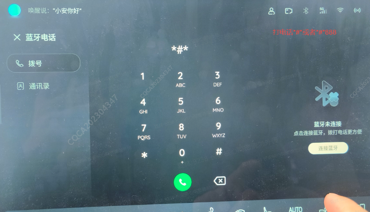
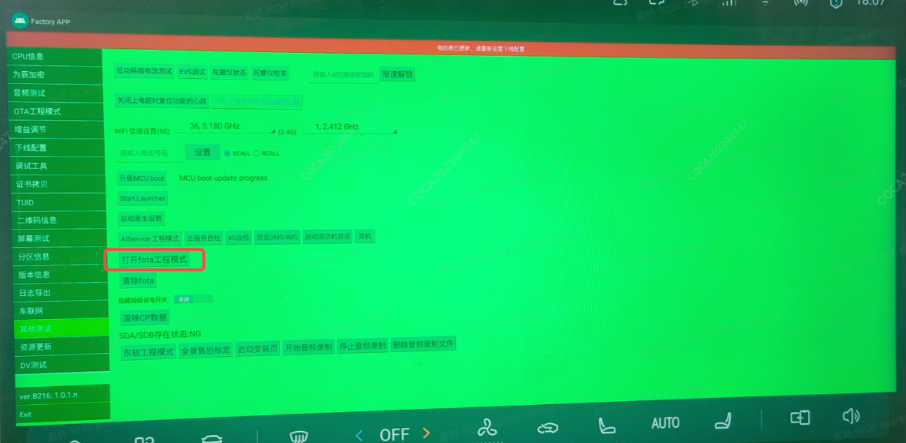
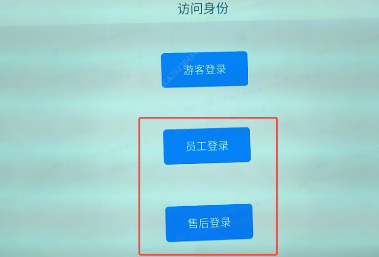
2、点击进入售后服务→点击智能换件→确认换件信息（控制器选C3B，硬件件号输入3609360-PT301)→确认软件版本信息点击开始刷写（刷写完成后退出即可）
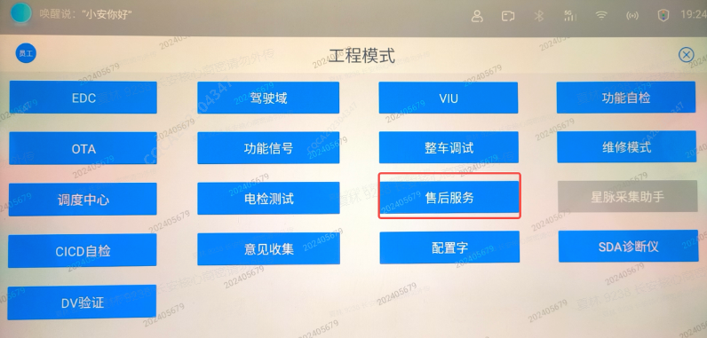
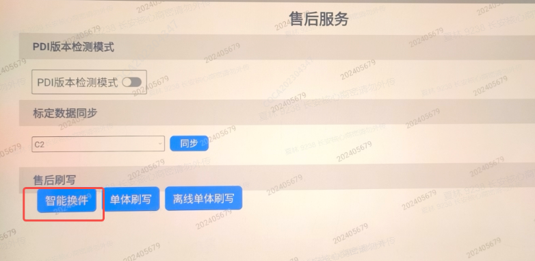
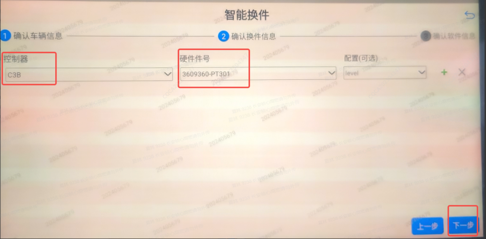
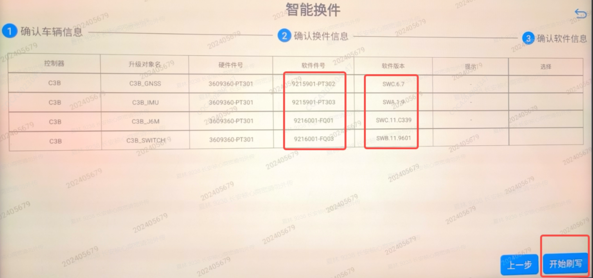
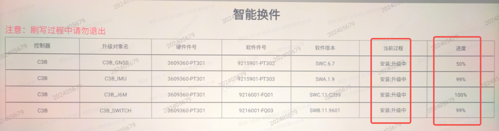
1、连接好诊断仪后依次点击到对应车型的目录→点击中央计算机C3B→诊断数据版本→特殊功能
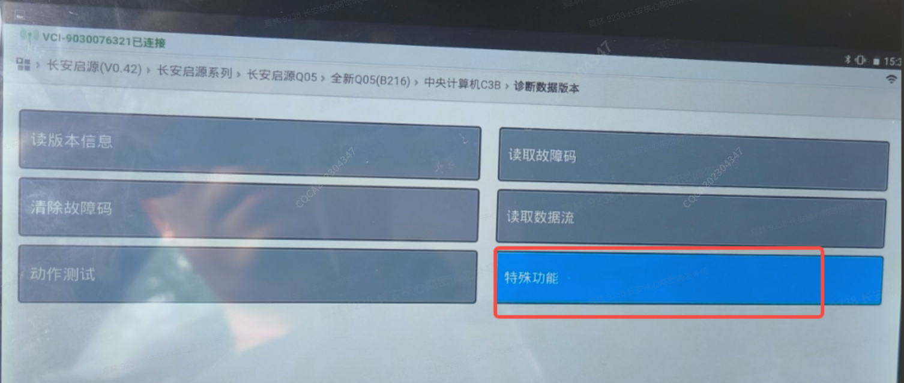
2、点击写入VIN→输入车辆17位VIN码
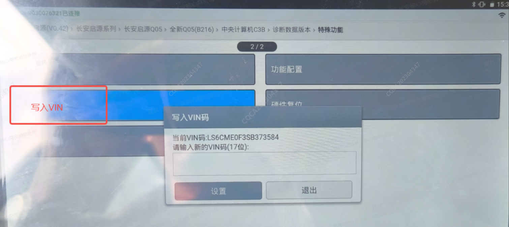
1、连接好诊断仪后进入对应车型目录→点击中央计算机C3B→点击诊断数据版本→点击特殊功能→点击车型配置→选择对应车型配置
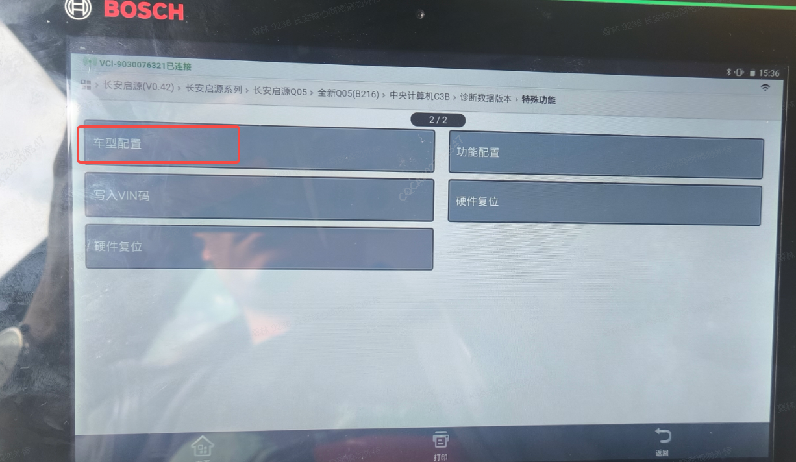
1、车辆更换完新域控后，按照售后维修诊断仪使用指导，连接好诊断仪，进入对应车型目录后选择“中央计算机C3B”，点击进去。
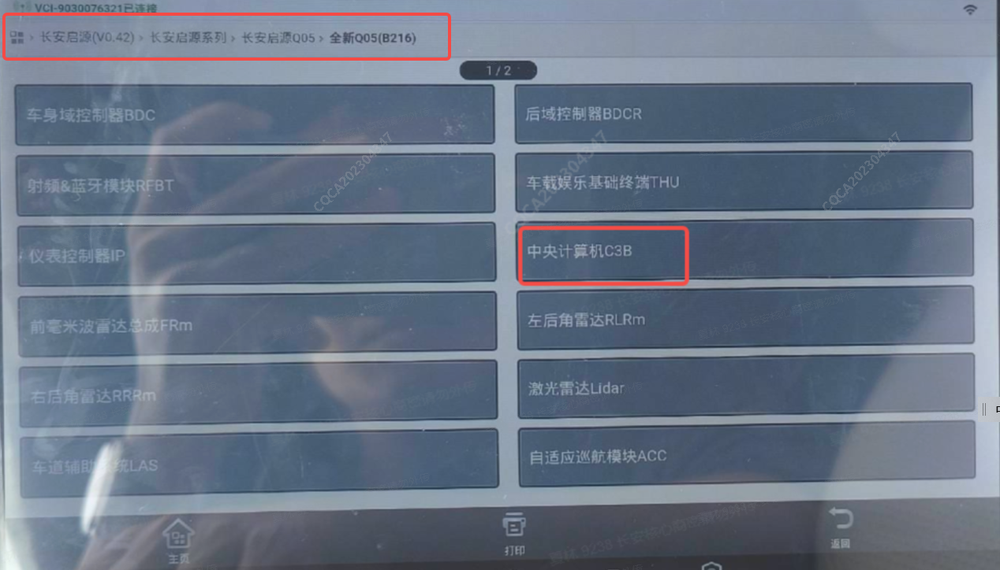
2、进入域控后选择“诊断数据版本”→“读数据流”→“读常规数据→“TUID号””，点击进去，记下TUID号，再到车联网客服系统上进行设备更换；
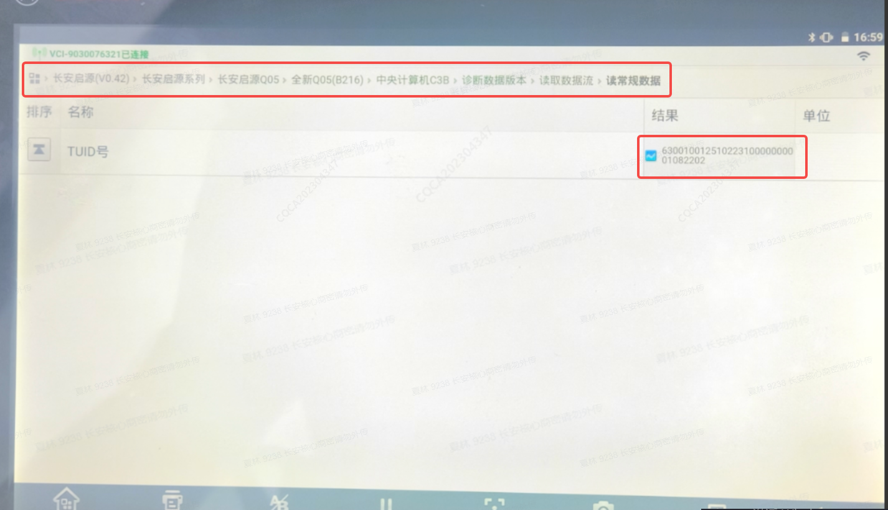
3、登录进入车联网客服系统后，输入更换域控车辆的车架号（VIN），点击搜索；
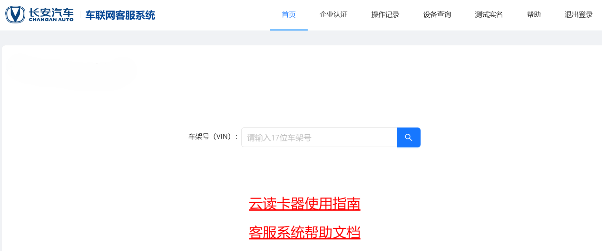
4、进入后，点击“设备更换”，选择C3B_J6M，点击“更换”；
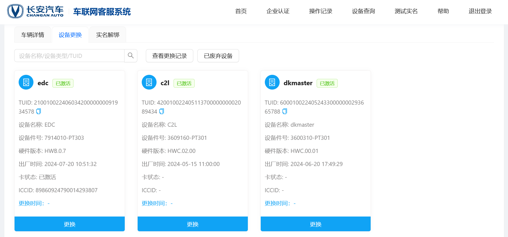
7、进入后，在“新设备TUID”处输入前面从诊断仪上读出来的完整TUID，点击查询，下方会显示一行“新设备状态：正常”，点击“下一步”；
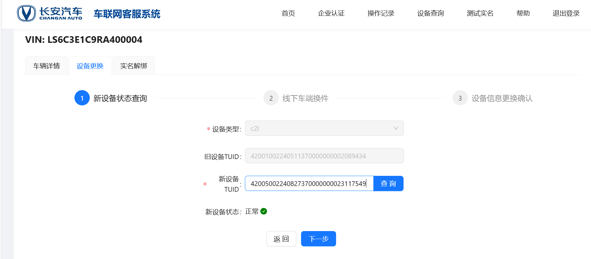
8、按照提示完成车端新域控的换装，换装完成后点击“下一步”；
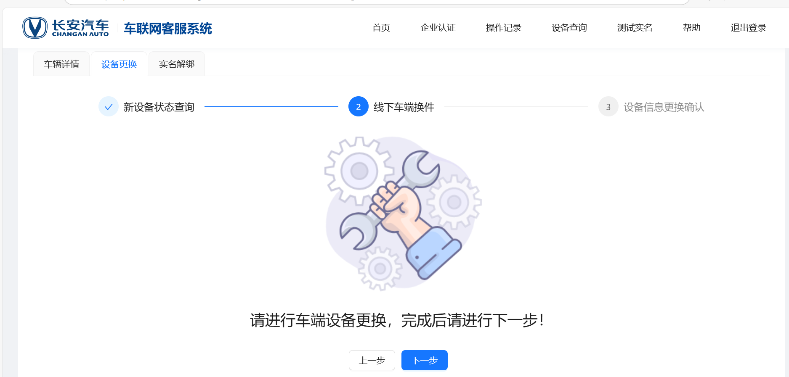
9、进入后，点击“获取验证码”，将收到的验证码输入进去，点击“提交”即可。
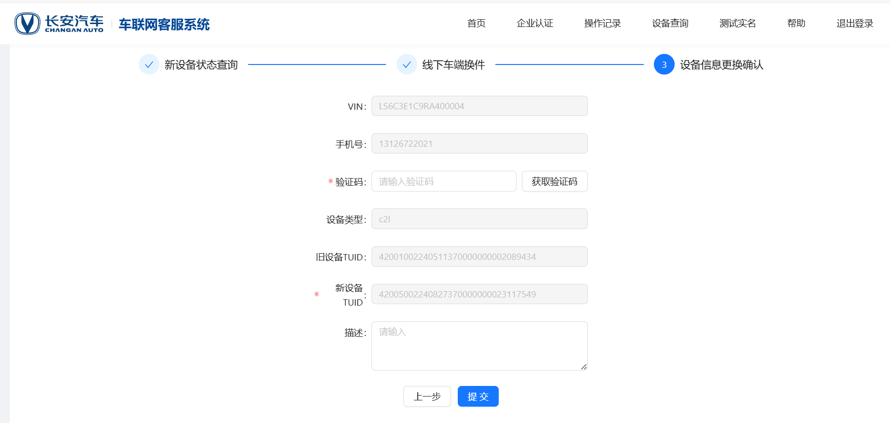
1、进入中央计算机：ssh root@192.168.2.16 密码：CQCATech@J6M#2025， 进入中央计算机后cd /map;
2、 新开一个窗口adb push D:\ota_demo_uart_MVT\ota_demo_uart_MVT /map;（这里的路径是升级包放置在本地的路径，升级包需要提前下载存放在本地，升级包下载请联系对应售后服务人员）
3、在控制器窗口赋能:chmod 777 ./ota_demo_uart_MVT/build/up.sh;
4、写杆臂值cd ./ota_demo_uart_MVT/build目录下，输入命令chmod 777 ./216.sh 输入命令./216.sh；正常刷完会显示杆臂值数据，如不正常显示输入：tail -f /dev/ttyS1 然后printf "AGGETINSCFG" >>/dev/ttyS1
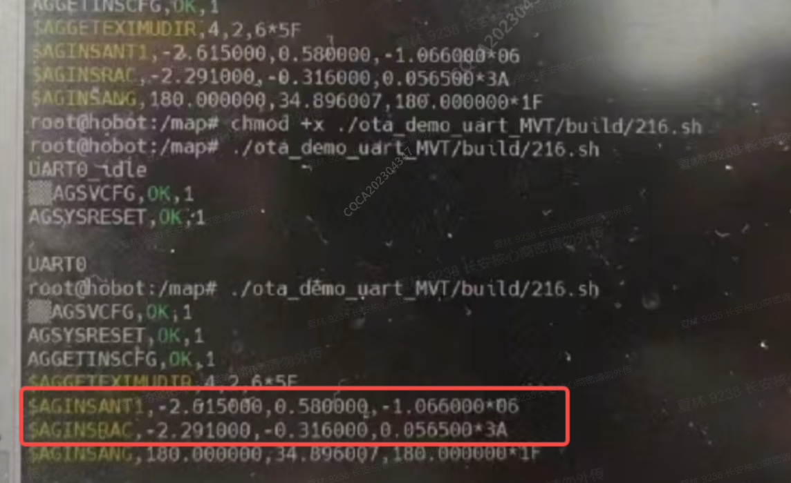
1、更换控制器以后按照售后标定手册进行视觉+激光标定即可